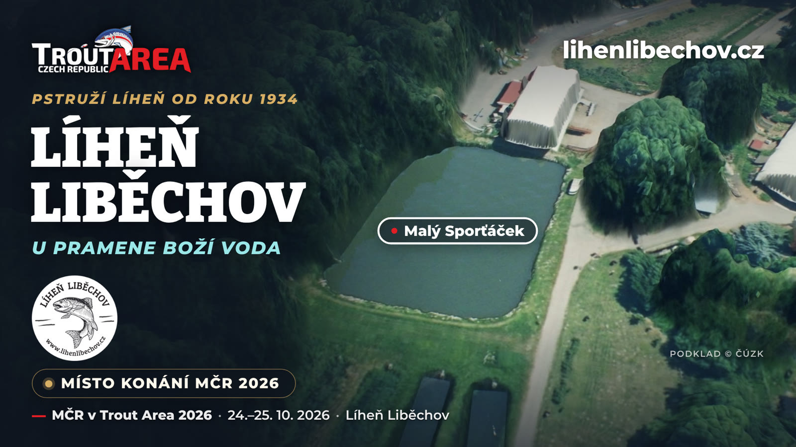
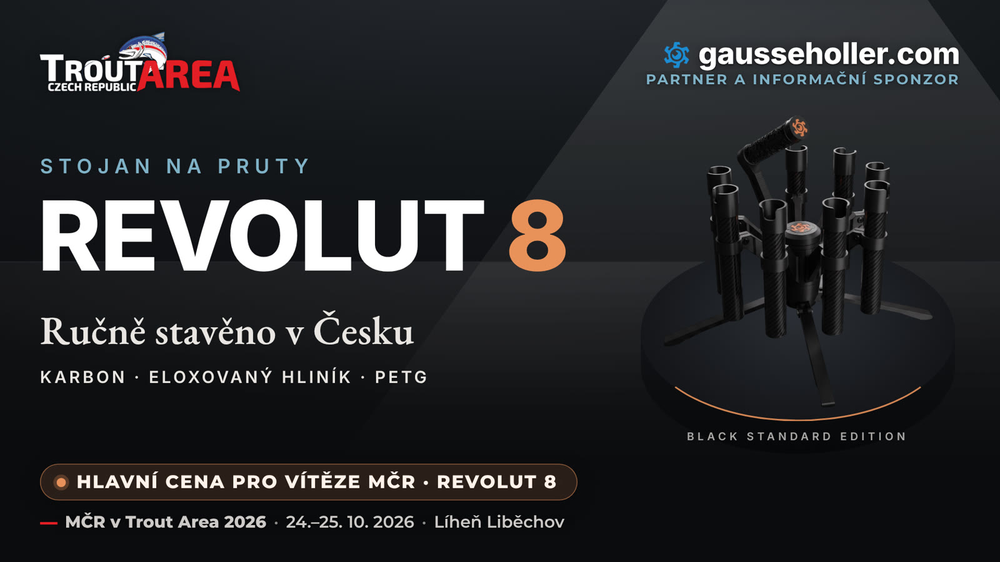
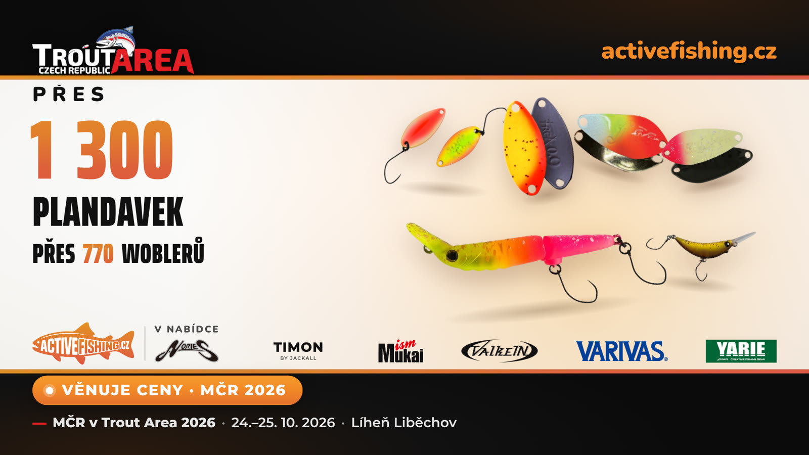
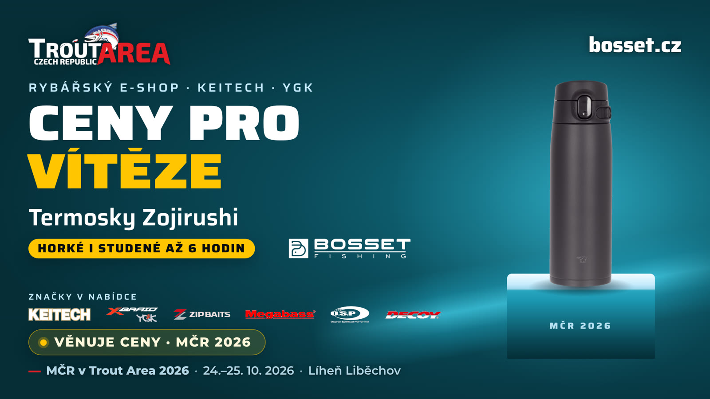
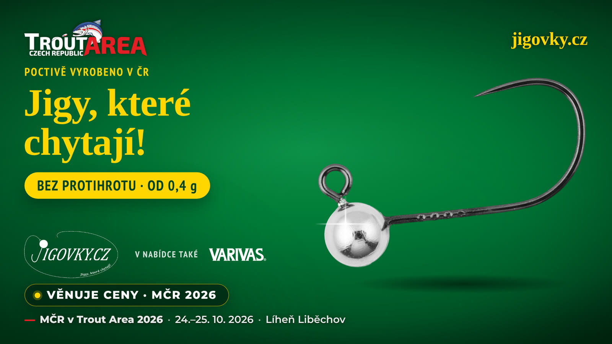
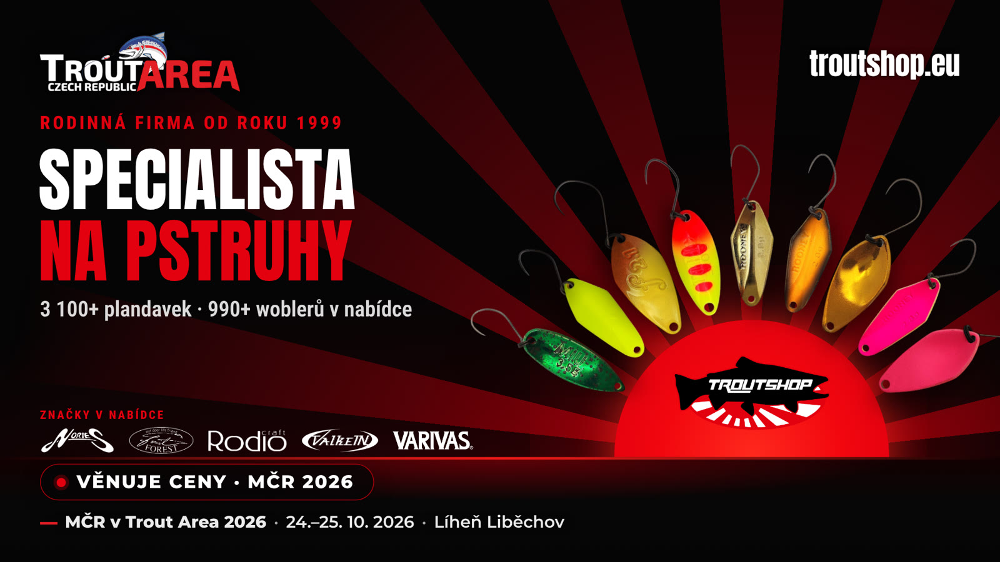
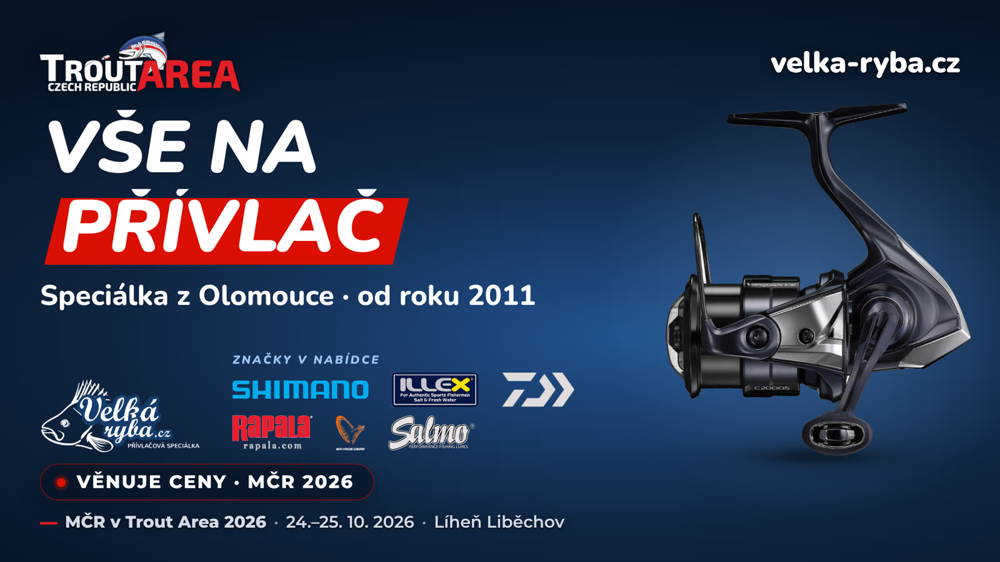
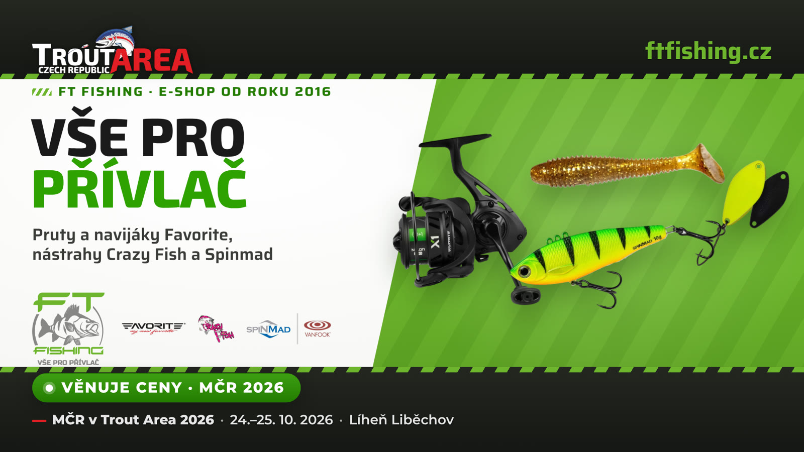
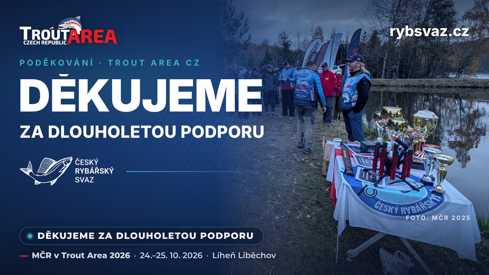

<!-- vložit do stránky webu; obrázky leží ve složce bannery_web/ vedle tohoto souboru -->
<style>
.ta-clanek{max-width:880px;margin:0 auto;padding:0 16px;font-family:Montserrat,"Source Sans 3",system-ui,sans-serif;line-height:1.6;color:inherit}
.ta-clanek h1{font-weight:900;line-height:1.15}
.ta-clanek h2{font-weight:800;margin-top:1.6em;color:#304285}
.ta-clanek figure{margin:1em 0}
.ta-clanek img{width:100%;height:auto;border-radius:12px;display:block}
.ta-clanek a{color:#e31e24;font-weight:700}
.ta-clanek hr{border:0;border-top:1px solid rgba(127,127,127,.3);margin:2em 0}
</style>
<article class="ta-clanek">
<h1>Partneři Mistrovství ČR v Trout Area 2026 – děkujeme!</h1>
<p>Mistrovství ČR v Trout Area 2026 je za námi. O víkendu 24.–25. 10. 2026 se na pstruhovém rybníku Malý Sporťáček v Líhni Liběchov utkalo 40 závodníků ve dvou dnech závodů. Takový šampionát by se ale neobešel bez lidí a firem, které za ním stojí. V pátek před mistrovstvím jsme na našem Facebooku představili každého partnera zvlášť – tady jsou všichni pohromadě.</p>
<hr>
<h2>Líheň Liběchov – místo konání</h2>
<figure></figure>
<p>Pstruží líheň s tradicí od roku 1934 v areálu Boží Voda v Liběchově, napájená prameny, z nichž nejsilnější je právě Boží Voda. Dnes rybářství s prodejnou ryb – živých i uzených – a se sportovním rybolovem na dvou rybnících. A ještě donedávna nejníže položené pstruhařství v Evropě: jen 164 m n. m.</p>
<p>Mistrovství se lovilo na pstruhovém rybníku Malý Sporťáček. Líheň Liběchov byla naším partnerem a hostitelem šampionátu – děkujeme za zázemí pro celé MČR!</p>
<p><a href="https://www.lihenlibechov.cz" target="_blank" rel="noopener">lihenlibechov.cz</a></p>
<hr>
<h2>Gausse Holler Custom Lab – hlavní cena</h2>
<figure></figure>
<p>Hlavní cenou MČR 2026 byl špičkový stojan na pruty Revolut 8 od Gausse Holler Custom Lab – stojan na 8 prutů, vyrobený v Česku. Stojany jsou k mání v různých variantách a s možností customizace, z vysoce kvalitních materiálů: karbon, eloxovaný hliník a PETG.</p>
<p><a href="https://gausseholler.com" target="_blank" rel="noopener">gausseholler.com</a></p>
<hr>
<h2>Activefishing.cz</h2>
<figure></figure>
<p>Český e-shop, který vznikl z vášně zakladatele pro přívlač a zkoušení nových nástrah. V nabídce je přes 1 300 plandavek a přes 770 woblerů – Nories, Timon, Mukai, ValkeIN, Forest, YARIE nebo Velvet Arts – a k tomu vlasce VARIVAS. Obchod sází na rychlé doručení, unikátní sortiment a osobní přístup.</p>
<p>Activefishing.cz věnoval ceny pro závodníky MČR 2026. Děkujeme za podporu!</p>
<p><a href="https://www.activefishing.cz" target="_blank" rel="noopener">activefishing.cz</a></p>
<hr>
<h2>Bosset.cz</h2>
<figure></figure>
<p>Český e-shop pro přívlač a oficiální distributor Keitech a YGK X-Braid pro ČR. Přívlači na umělé nástrahy se věnují víc než dvacet let a dávají přednost nástrahám, které mají osobně vyzkoušené. V nabídce najdete i woblery Megabass, ZipBaits a O.S.P, trout area sortiment Fresh Lures a Decoy – a termosky Zojirushi.</p>
<p>Bosset.cz věnoval ceny pro závodníky MČR 2026: vítězové mistrovství získali termosky Zojirushi, které udrží nápoj horký i studený až 6 hodin. Děkujeme!</p>
<p><a href="https://www.bosset.cz" target="_blank" rel="noopener">bosset.cz</a></p>
<hr>
<h2>Jigovky.cz</h2>
<figure></figure>
<p>Jigové hlavičky a bezprotihrotové jigy poctivě vyrobené v ČR, s vlastním e-shopem. Pro pstruhaře jsou tu řady TroutJig Barbless (0,4–3 g), HD Barbless, wolframové Tungsten H 360 BL a LL Barbless; jigových hlaviček je v nabídce 990. K tomu vlasce, fluorocarbony a háčky VARIVAS.</p>
<p>Jigovky.cz věnovaly ceny pro závodníky MČR 2026. Díky za podporu!</p>
<p><a href="https://www.jigovky.cz" target="_blank" rel="noopener">jigovky.cz</a></p>
<hr>
<h2>Troutshop.eu</h2>
<figure></figure>
<p>Mistrovství ČR v Trout Area letos podpořil věcnými cenami také Troutshop.eu. Za slovenským e-shopem stojí bratři Jaro a Stano Petríčkovi – závodníci a nadšenci Trout Area, kteří rybařením sami žijí. Rodinná firma je v oboru od roku 1999 a je generálním partnerem Trout Area Slovakia.</p>
<p>Troutshop.eu posílá zboží i do České republiky. Je to obchod, za kterým stojí konkrétní lidé, které známe, a proto vám jeho nabídku rádi doporučujeme k prozkoumání – plandavky a woblery Nories, Forest, Rodio Craft a ValkeIN, háčky Vanfook, vlasce VARIVAS, gumy FishUp i japonská značka Velvet Arts.</p>
<p>Jaro a Stano, děkujeme za ceny pro závodníky MČR 2026!</p>
<p><a href="https://www.troutshop.eu" target="_blank" rel="noopener">troutshop.eu</a></p>
<hr>
<h2>Velká ryba</h2>
<figure></figure>
<p>Přívlačová speciálka z Olomouce: e-shop i kamenná prodejna, od roku 2011. V nabídce jsou 3Stan, Fox Rage, Keitech, Mepps, Rapala, Salmo, Savage Gear, Shimano a mnoho dalších; pro pstruhaře plandavky Shimano Cardiff, Illex Native Spoon nebo Daiwa Presso. Od roku 2025 je obchod partnerem programu Shimano Rod Test Center – v olomoucké prodejně si pruty Shimano půjčíte a vyzkoušíte přímo u vody.</p>
<p>Velká ryba věnovala ceny pro závodníky MČR 2026. Děkujeme!</p>
<p><a href="https://www.velka-ryba.cz" target="_blank" rel="noopener">velka-ryba.cz</a></p>
<hr>
<h2>FT Fishing</h2>
<figure></figure>
<p>Fishing Trade CZ provozuje e-shop ftfishing.cz od roku 2016 a showroom s výdejnou v Praze 9. Sortiment je čistě přívlačový a stojí na třech značkách: pruty a navijáky Favorite, gumové nástrahy Crazy Fish a polský Spinmad – rotující ocásky, cikády i plandavky Target Spoon pro trout area. V nabídce jsou také háčky Vanfook.</p>
<p>FT Fishing věnoval ceny pro závodníky MČR 2026. Děkujeme!</p>
<p><a href="https://www.ftfishing.cz" target="_blank" rel="noopener">ftfishing.cz</a></p>
<hr>
<h2>Český rybářský svaz</h2>
<figure></figure>
<p>Český rybářský svaz je nezisková organizace s dlouholetou tradicí, která se věnuje rybářství, ochraně vodních živočichů a přírody, a patří mezi největší zájmová sdružení v České republice. Sportovní lov ryb je nedílnou součástí jeho činnosti – od místních závodů až po mistrovství republiky a světa.</p>
<p>Líheň Liběchov, kde se letošní mistrovství konalo, provozuje Český rybářský svaz, místní organizace Mělník.</p>
<p>Trout Area Czech Republic může s podporou svazu počítat už řadu let. Vážíme si spolupráce, která stojí na vzájemné důvěře a společném cíli: rozvíjet sportovní rybolov a ohleduplný přístup k rybám i k vodě. Děkujeme za dlouholetou podporu a těšíme se na další společné sezóny!</p>
<p><a href="https://www.rybsvaz.cz" target="_blank" rel="noopener">rybsvaz.cz</a></p>
<hr>
<p>Ještě jednou díky všem partnerům, závodníkům i divákům. Uvidíme se u vody!</p>
<p><em>Trout Area Czech Republic</em></p>
</article>
